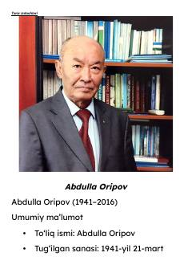

AOO'zbekiston xalq shoiri Abdulla Oripovning hayoti va ijodiga bag'ishlangan qisqacha ma'lumotnoma.
Ushbu kitob O'zbekiston Qahramoni va xalq shoiri Abdulla Oripovning hayoti, ijodiy faoliyati va adabiy merosiga bag'ishlangan ma'lumotnomadir. Unda shoirning tarjimai holi, mashhur asarlari, tarjimalari hamda O'zbekiston Respublikasi Davlat madhiyasi muallifi sifatidagi faoliyati yoritilgan.